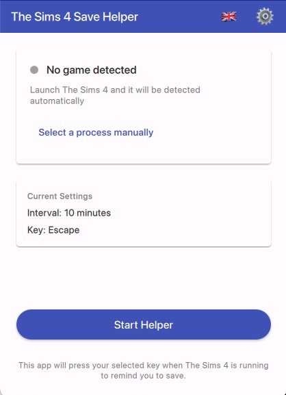

A simple utility that automatically reminds you to save your game at regular intervals. Since The Sims 4 doesn't have auto-save, this helper presses a key (like Escape) periodically to open the save menu and remind you to save.
Download
Checking for latest version...
Windows: Download and run the .exe file directly.
macOS: Unzip and move the app to your Applications folder.
Simple and Easy to Use

Features
- Auto-detects The Sims 4 - Only runs when the game is active
- Configurable intervals - From 1 second to 30 minutes
- Multiple key options - Escape, F5, F9, Ctrl+S, and more
- Test mode - Verify it works without the game running
- Remembers settings - Your preferences are saved automatically